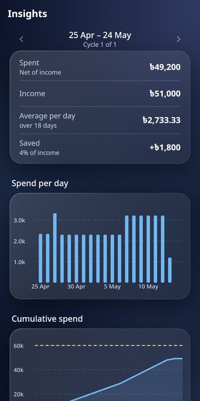
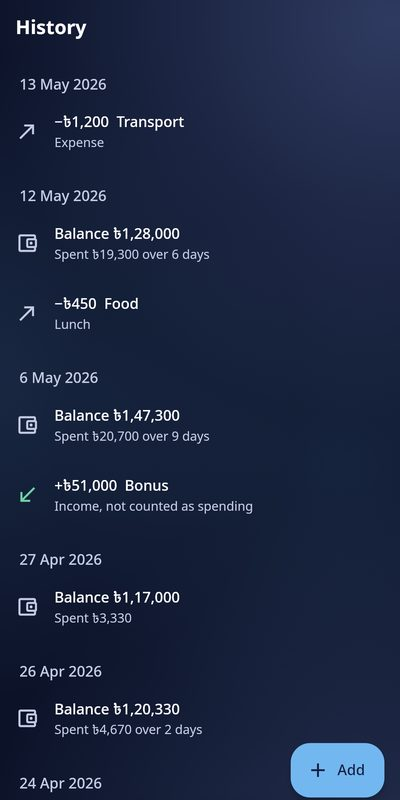
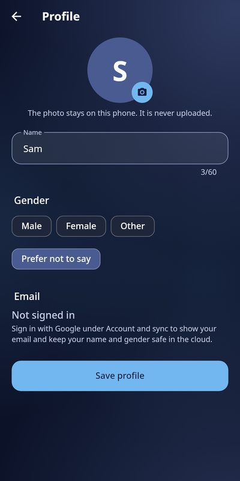

What does it do?
You tell it one number a day: the money you have left. It works out everything else.
Try it. The month below started with 125,000, the budget is 60,000, and today is day 18 of 30. Change the balance.
Any currency. You can type sums too, like 79000+1000.
You can spend
a day for the next 12 days
Spent 45,000Average 2,500 a day
The white mark is where you should be today. This is sample data, not your money.
Do I have to write down every purchase?
No. That is the whole idea.
- One number a day. Spending is worked out from how your balance changed.
- Forgot a few days? Type the balance when you remember. The spending is spread over the days it covers.
- Spent nothing? One tap on "Nothing spent today".
- Want detail? Add an expense with a category whenever you like. It is optional.
- Fast typing. The box understands sums like 1200+300, and entries like "26 april 123720".
Who is it for?
Anyone who gets paid, spends, and wants to stop guessing.
- Paid monthly
- Your month starts on payday, not the 1st. See what is left per day until the next salary, and how it compares with last month.
- Students
- Cycles of any length, like every 14 days. Put your allowance as the budget and watch one daily number.
- Freelancers
- Log income when it arrives. It is kept apart from spending, so a big payment never hides how you spend. Set a base salary to see your savings rate.
- Shop and stall owners
- Type the cash you hold at closing time. Watch what goes out each day. It tracks money, not invoices or stock: it is not accounting software.
- Anywhere in the world
- Your currency, your digit grouping. Taka, rupees, dollars, dirhams and more, with 1,00,000 grouping if you prefer it.
What will I see?
The answer first, the detail one tap away.



Also inside: a what-if tool that never saves, a list of bills to pay, charts, Excel export, a daily reminder, and a fingerprint or PIN lock. Screenshots show sample data.
Is my data safe? Do I need an account?
No account is needed. Your numbers live on your phone.
- No bank login, no SMS reading, no contacts, no location, no ads, no tracking.
- Signing in with Google is optional. It keeps a private copy in your own account so you can use another phone.
- Only you can read that copy. You can delete the account and its data from inside the app, at any time.
- Turn on the lock to ask for your fingerprint or PIN, and to hide the app in the recent-apps list.
Read the privacy policy or how to delete your account.
What if I lose my phone?
It depends on one choice you make on the first screen.
- You signed in with Google. Install the app on the new phone, tap Continue with Google, and your numbers come back.
- You used it without an account. Only a backup file you saved can bring it back. Save one now and then under More, Backup and export.
Is it really free?
Yes. No price, no ads, no subscription.
Bluecoins is open source under the MIT licence, so anyone can read the code, and it is Android only for now.
How do I install it?
- Download the APK from the button below, on your phone.
- Open it. Android asks to allow installs from your browser or files app; allow it once.
- Open Enough and choose Continue with Google or Use without an account.
When a newer version is out, the app shows a notice on Home with a link to download it. You can turn that off in Settings.
Ready to know your number?
It takes a minute to set up. Then it is one number a day.
Download for Android